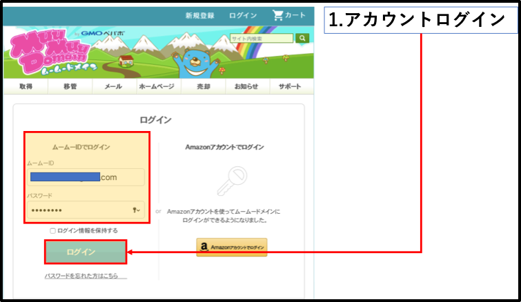
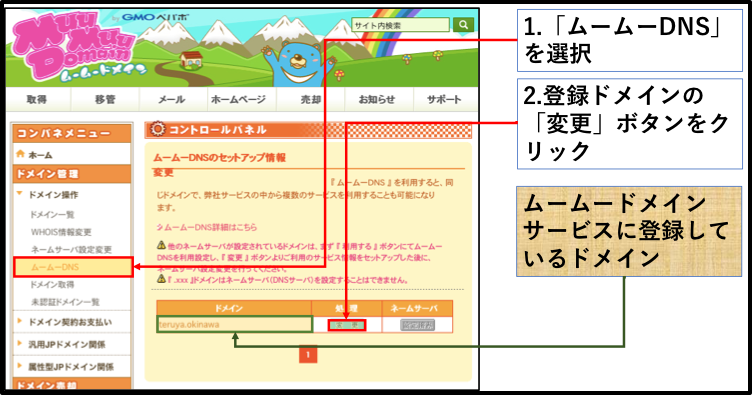
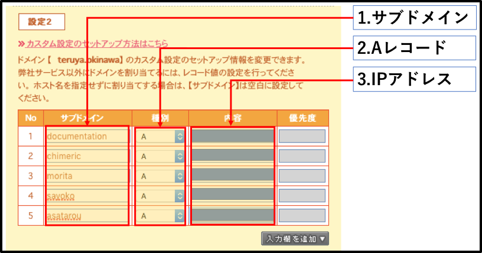
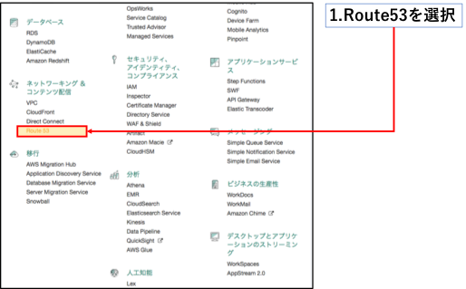
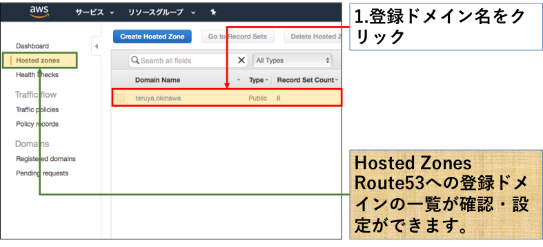
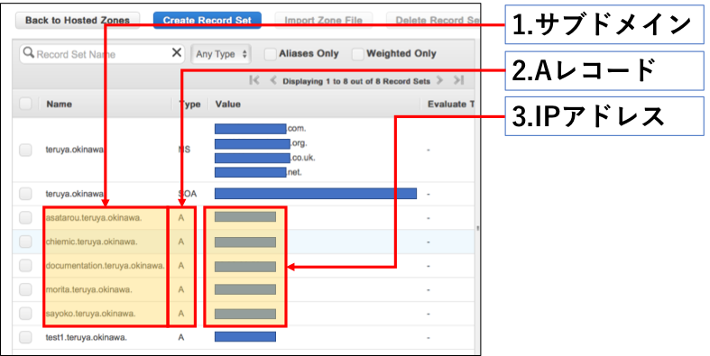
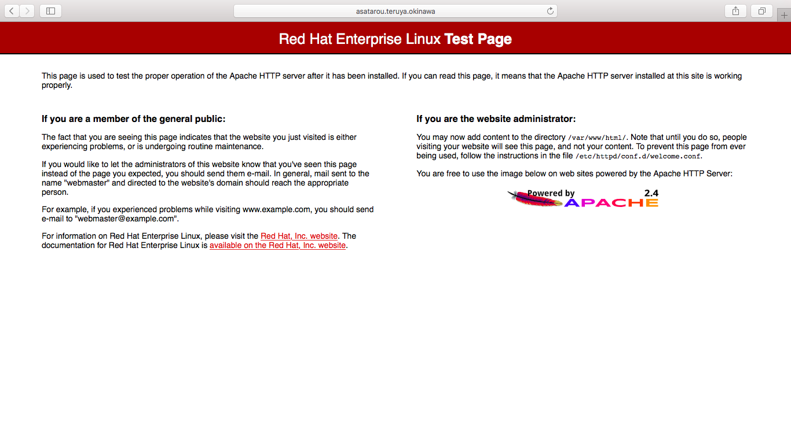

Apacheの基本設定¶
この章では、ApacheでWebページを公開する最低限の設定内容を記載します。
サマリ 〜用語編〜¶
この章で頻出するキーワードを事前に勉強しておきましょう。
httpd¶
Apacheのサービス名です。また、Apacheはyumにおいてもhttpdというパッケージ名で登録されいるため、yum installed Apacheなどではインストールできませんのでご注意を。
/etc/httpd/conf/httpd.conf¶
Apacheの核となる設定ファイルです。Apacheは設定ファイルをディレクティブと呼ばれる命令文を記載することで細かな設定を反映させることが可能です。
DocumentRootディレクティブ¶
Apacheが提供するコンテンツが配置されるディレクトリを指定することが可能です。 デフォルトでは以下に示すように「/var/www/html」ディレクトリに設定されています。
# DocumentRoot: The directory out of which you will serve your # documents. By default, all requests are taken from this directory, but # symbolic links and aliases may be used to point to other locations. # DocumentRoot "/var/www/html"
サマリ 〜コマンド編〜¶
注釈
ただいま整備中（^ω^）
ハンズオン¶
それでは早速ハンズオン！
Apacheのインストール¶
1.Apacheをインストールします。上述のサマリでも述べましたが、パッケージ名はApacheなどではなくhttpdなのでご注意を。
#Apacheをインストール yum install httpd
2.インストールされているかどうかを確認しましょう。
#Apacheがインストールされているかどうかを確認 yum list installed | grep httpd #こんな感じに出力されれればインストールできてます。 httpd.x86_64 2.2.34-1.15.amzn1 @amzn-main httpd-tools.x86_64 2.2.34-1.15.amzn1 @amzn-main
3.Apacheのバージョンを確認してみましょう。
#Apacheのバージョンを確認 httpd -v #バージョンは2.4.6のようですね。 Server version: Apache/2.4.6 (Red Hat Enterprise Linux) Server built: Sep 25 2017 09:13:41
Apache起動してみる¶
1.Apacheのサービスを起動してみましょう。
#Apacheのサービス状態を確認 systemctl status httpd ● httpd.service - The Apache HTTP Server Loaded: loaded (/usr/lib/systemd/system/httpd.service; disabled; vendor preset: disabled) Active: inactive (dead) Docs: man:httpd(8) man:apachectl(8) #Apacheのサービスを起動 systemctl start httpd #Apacheのサービス状態を確認 ● httpd.service - The Apache HTTP Server Loaded: loaded (/usr/lib/systemd/system/httpd.service; disabled; vendor preset: disabled) Active: active (running) since 水 2017-10-18 13:07:47 UTC; 22s ago Docs: man:httpd(8) man:apachectl(8) Main PID: 1242 (httpd) Status: "Total requests: 0; Current requests/sec: 0; Current traffic: 0 B/sec" CGroup: /system.slice/httpd.service ├─1242 /usr/sbin/httpd -DFOREGROUND ├─1243 /usr/sbin/httpd -DFOREGROUND ├─1244 /usr/sbin/httpd -DFOREGROUND ├─1245 /usr/sbin/httpd -DFOREGROUND ├─1246 /usr/sbin/httpd -DFOREGROUND └─1247 /usr/sbin/httpd -DFOREGROUND 10月 18 13:07:47 testserver systemd[1]: Starting The Apache HTTP Server... 10月 18 13:07:47 testserver httpd[1242]: AH00558: httpd: Could not reliably...e 10月 18 13:07:47 testserver systemd[1]: Started The Apache HTTP Server. Hint: Some lines were ellipsized, use -l to show in full.
Apacheの自動起動設定¶
1.Red Hat 7系からはsystemctlコマンドを使用してを自動起動に設定します。6系までは機能していたchkconfigコマンは現在使用することはできません。
#httpdの自動起動設定を確認 systemctl is-enabled httpd disabled #自動起動設定：OFF #httpdの自動起動を設定 systemctl enabled httpd Created symlink from /etc/systemd/system/multi-user.target.wants/httpd.service to /usr/lib/systemd/system/httpd.service. #httpdの自動起動設定を確認 systemctl is-enabled httpd enabled #自動起動設定：ON注釈
ちなみにですが、chkconfigコマンドを使用してみようとすると次のような出力がありました。
[root@testserver ec2-user]# chkconfig –list httpd
- 注記: この出力に含まれるのは SysV サービスのみです。ネイティブな
- systemd サービスは含まれません。SysV の設定データはネイティブな
systemd サービスを一覧表示する場合は 『systemctl list-unit-files』 を使用します。 特定のターゲットで有効になっているサービスを確認する場合は
『systemctl list-dependencies [target]』を使用します。
サービス httpd に関する情報の読み込み中にエラーが発生しました: そのようなファイルやディレクトリはありません
ApacheにFQDNを紐付ける¶
1./etc/httpd/conf/ディレクトリに移動します。
#指定ディレクトリへ移動 cd /etc/httpd/conf/ #カレントディレクトリを確認 pwd
2./etc/httpd/conf/httpd.confファイルの中身をみてみましょう。長いのでviewコマンドで見てみましょう。
#ファイル内容を確認 view httpd.conf #viコマンドと同様に「:q!」で終了できます。
3.バックアップを取得します。
#保存先ディレクトリを作成 mkdir reg-ConfigBackup #保存先ディレクトリへバックアップを作成 cp -a httpd.conf ./reg-ConfigBackup/htppd.conf_yyyymmdd #保存先ディレクトリにバックアップがとれていることを確認 ls -lh ./reg-ConfigBackup
4.ファイルを編集します。
#Apachの設定ファイルを確認してみましょう。 vi httpd.conf #ファイルが開けましたらコマンドモード上で「/ServerName」と入力し、「Enter」キーを押下してください。 #以下の記述に飛べばおk。とばなかったら「N」キーをいくつか押下してみましょう。 ##ServerName www.example.com:80 #「a」キーを押下し、インサートモードへ移行後、「www.example.com」の部分を「XXXX.teruya.okinawa」に変更してください。「xxxx」はなんでもおk
5.サービスを再起動します。
#Apacheのサービスを再起動 systemctl restart httpd #Apacheのサービスを状態を確認 #起動していること systemctl status httpd
サブドメインを登録する。¶
今回のハンズオンでは、あらかじめ筆者が以下のドメイン名でドメインを取得しています。
注釈
筆者で取得しているドメイン名
teruya.okinawa
上述のドメインのサブドメインをあらかじめ設定しております。以下は筆者が事前設定したムームードメイン、ならびにAWS Route53を用いたサブドメインの設定手順です。
ムームードメインにサブドメインを登録する¶
1.ムームードメインへログインする。

align: center
2.サイドバーから「ドメイン管理」->「ドメイン操作」->「ムームーDNS」の順に選択します。

align: center
3.コントロールパネル画面に遷移します。

align: center
4.サブドメインを登録します。

align: center
Route53へのドメイン登録¶
1.AWSコンソール画面へログインします。

align: center
2.「ネットワーキング＆コンテンツ配信」->「Route53」の順に選択します。

align: center
3.左ペインから「Hosted zones」をクリックすると以下の画面に遷移します。 「teruya.okinawa」がドメインとして登録されていることが確認できます。

align: center
4.以下の画面に遷移します。この画面でサブドメインを登録します。

align: center
以上がサブドメイン登録の流れになります。
名前解決
nslookup ドメイン名
4.ブラウザを起動し、設定したurlで接続できるかを確認する。

インデックスファイルを配置してみよう¶
インデックスファイルを配置すると挙動がどのように変化するかを確認してみましょう。
1.インデックスファイルを作成しましょう。
#touchコマンドでインデックスファイルを作成しましょう。 vi index.html #ファイルが作成しているかどうかを確認しましょう。